Imgur Upload Experience
As an image sharing service, Imgur wants to make uploading and sharing images simpler for users so that they can increase overall share of and integration in the social image sharing business.
Problem Definition
The current image upload process lacks clear direction which confuses users. A successful upload process show new users how to effectively upload and share images.
Audience
The project focused on desktop users who upload images to share with others.
Team / Role
I worked alone on this project for both research and interaction design.
Constraints
I budgeted three days for this project for both research and interaction design. I created my project plan in three hours and spent five hours on research. The findings, analysis, and interaction design took a total of fifteen hours.
Design Process
I separated this project into three phases: a task flow audit, goals analysis, and interaction redesign.
Understanding goals is at the core of any interaction, so I started with a quick exploration of the goals Imgur users might have.
I performed an informal poll of friends and colleagues who have shared images online in the last month and sorted the results into a chart comparing frequency of feature use to the number of users who reported usage. This helped me understand how to prioritize features.
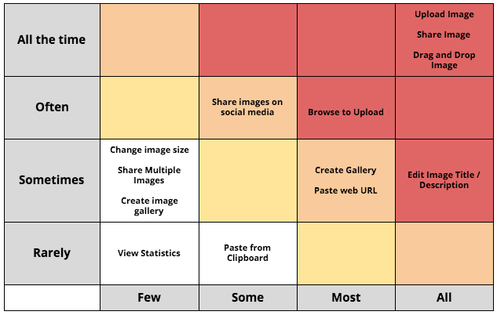
After prioritizing features I considered interface improvements, settling on two principles:
- Instructional — The screen should show new users the easiest way to upload an image and help them understand what to do next.
- Goal Oriented — The interface should prioritize users’ primary focus - sharing images - and cluster related controls.
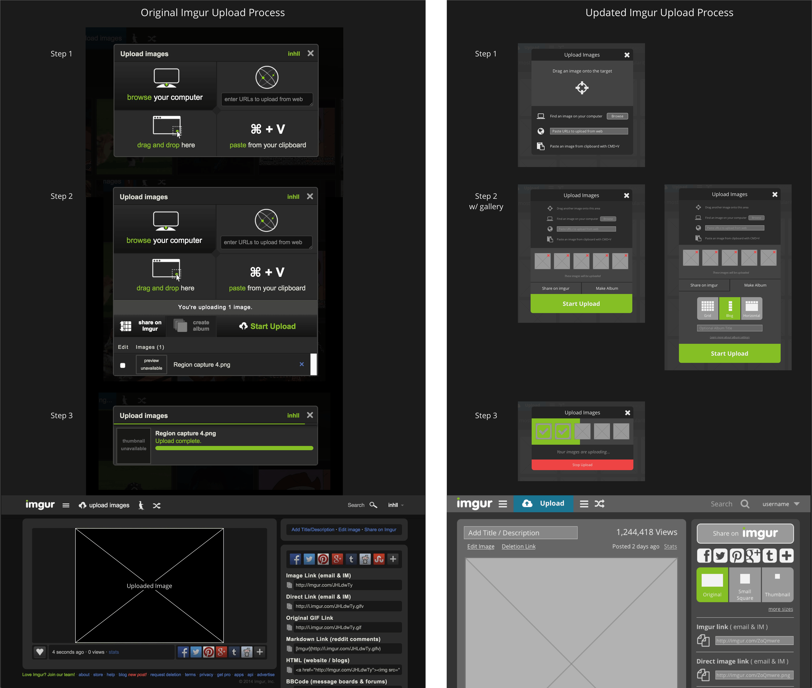
Step 1 — Choosing the Files
When users arrive on the home screen and tap the upload button they are presented with a screen with four equally weighted options (Fig. 1.1). It is not obvious to users which option is best.
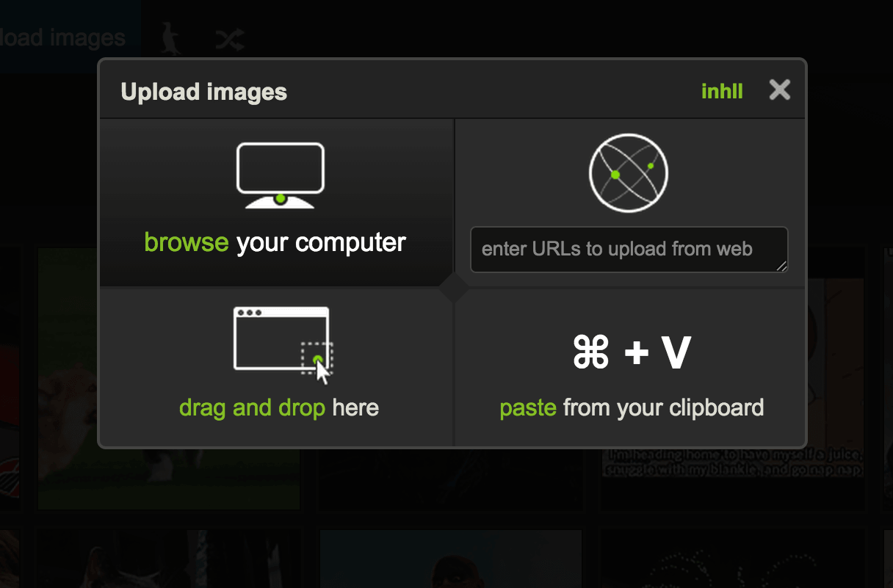
Figure 1.1 - Original State
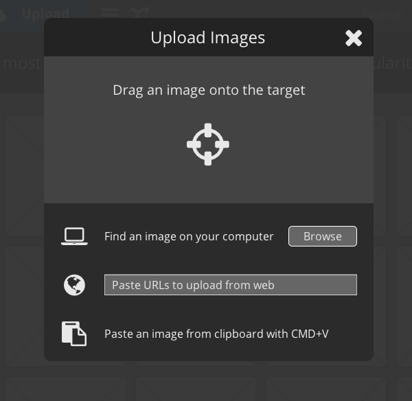
Figure 1.2 - Updated State
I proposed a new look (Fig. 1.2) which keeps the process and options intact, but highlights the drag and drop option for new users. The new interface is much easier to scan and understand which options are available. Imgur can take advantage of this new interface to teach new users the best way to upload images.
Step 2 — Beginning the Upload
Once users select files to upload, the Imgur interface does not show clear hierarchy of next action (Fig. 2.1). In the current interface, information competes for user attention and is not clearly separated by task or order of operations. Furthermore, some content is green which draws the eye, visual treatment of button areas and content areas is similar, and even reading through the non-linear content is difficult.
By de-emphasizing already used controls (Fig. 2.2), hiding a few ambiguous controls (edit image and file name), and emphasizing next steps, the interface can helpfully guide users toward next action.
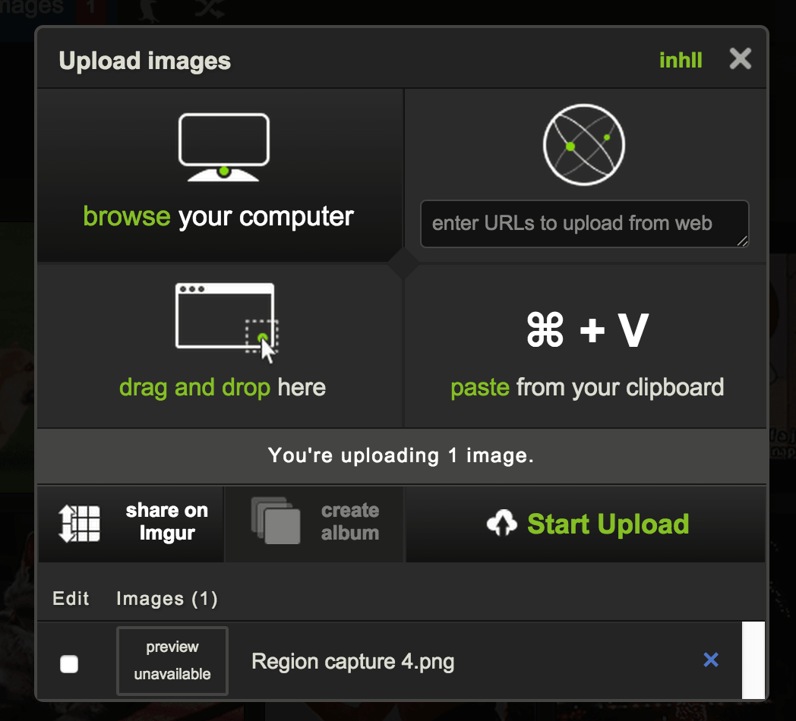
Figure 2.1 - Original State
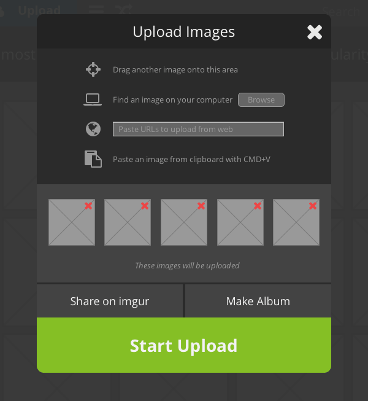
Figure 2.2 - Updated State
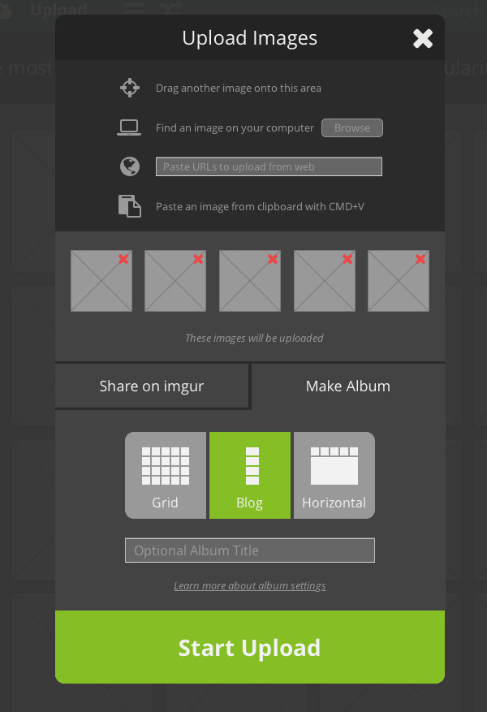
Figure 2.3 - Original State w/ Gallery
I ordered the page to provide an overview of and easy user flow through the entire upload process:
- Header Info - User action or current step and a way to cancel the upload
- File Attachment Methods - Instructions to attach another file
- Informational Message - Message about file upload state
- Picture Info and Options - Information about specific file(s)
- Upload Options / Start Upload - Select options and begin upload
- Choose Images
- See chosen images
- Do something with images
- Upload images
The focus, again, is on helping the user accomplish the goal of uploading a photo. The design guides users to the Start Upload button. Each step is clearly represented on the screen and button areas are tappable for users accessing via mobile devices.
Step 3 — The Upload Begins
The current Imgur interface shows each file individually and displays the green progress bar for each file It does not show the user how many total files have been uploaded or how many remain to be uploaded.
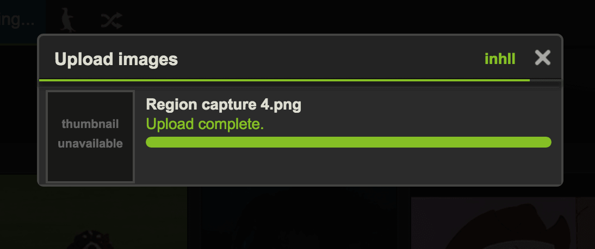
Figure 3.1 - Original State
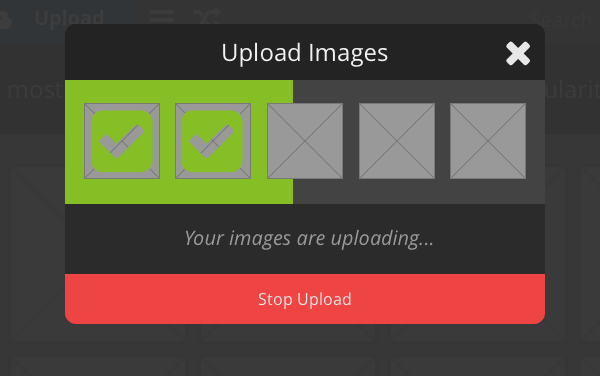
Figure 3.2 - Updated State
I propose a simpler screen (Fig. 3.2) in which all functionality exists and users know which files have uploaded, which failed to upload, and about how much time remains until the remainder of the files will be uploaded. There is also a message area that can display different system messages, followed by a clearly labelled cancel action.
Step 4 — The Upload Succeeds!
After upload success, statistics, edit, description, views, posting time, etc. are sprinkled about the Imgur interface. Icons for social sharing are both below the picture and on the right side of the page. Share in Imgur is also not an obvious choice.
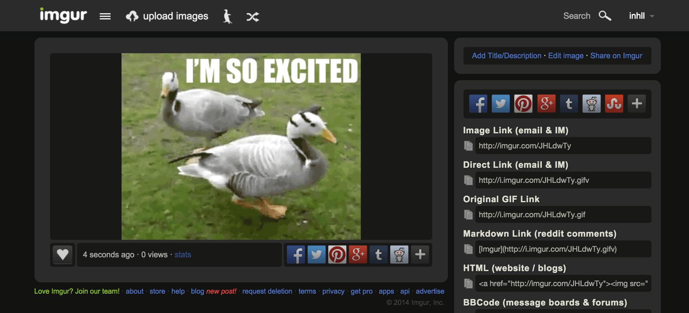
Figure 4.1 - Original State
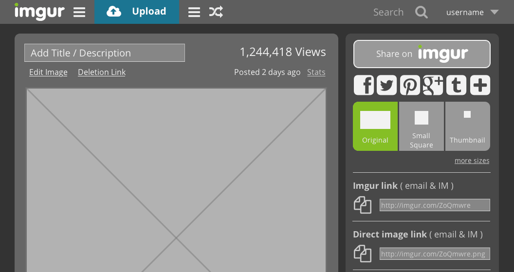
Figure 4.2 - Updated State
In the proposed design, the original functionality exists but has been reorganized on the page. The title / description are above the image, clustered with editing and deletion controls, so operations which affect the image are all in the same area of the page. Information about photo views, posting time, and stats are in the upper right to balance the container and to aid findability.
Sharing is available only in the right panel with Imgur’s sharing prioritized, simple social sharing highlighted, and image size controls surfaced. The existing links are also displayed below the simple share options to ensure users who need specific links are still served.
Retrospective
I feel this project was a success and resulted in a much better upload interaction for novice Imgur users. I shared the interface with two of my original task analysis participants and they immediately understood what actions to take.
If I could budget more time for this project, I would do a full comparative usability test to determine the effectiveness of the updated interface.

Chicago Transit Authority Signage Design

Guerrilla Usability Research

iOS Today View Concept

Dominicks Refresh

Formative Resale Research